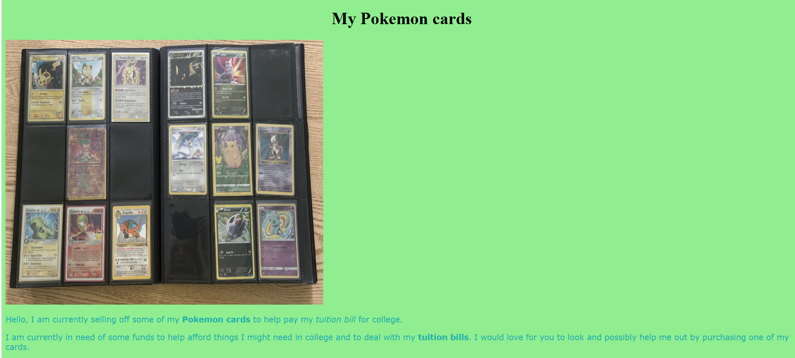
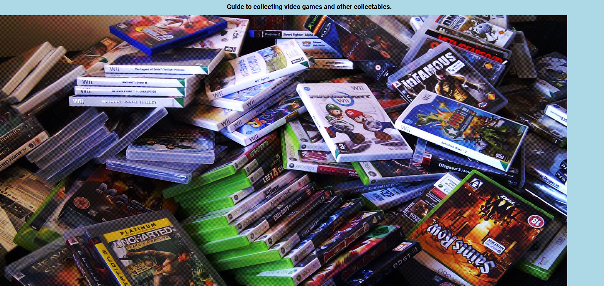
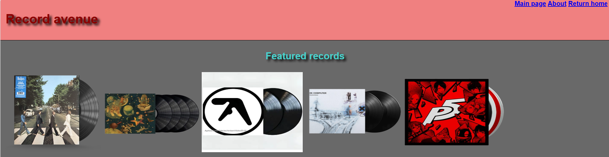
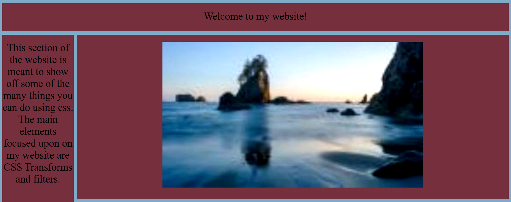
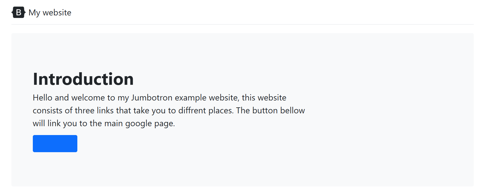
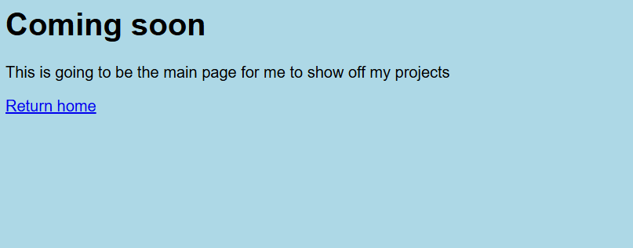

My projects
My Pokemon card collection, Sep 13, 2026

This is the first project I created for my web design class. I decided to create a page showing some of my pokemon cards from when I collected them as a kid. This page demostrates both css and html.
Head to this pageGame collecting Tips, Sep 27, 2017

This webpage details some tips in regards to collecting video games. The website uses css to provide some life to the website and make it more intresting to the eyes.
Head to this pageRecord website, Oct 25, 2017

This website uses flex displays to create a uniform layout that shows some vinyl that I have collected for sale. The website also has a separate page for contact infornmation and other important details.
Head to this pageAnimation example Webpage, Nov 8, 2017

The animation webpage shows off some of the many things you can do using keyframes and the animation tag with css.
Head to this pagePennstate Bootstrap Webpage, Nov 13, 2017
This webiste uses the carousel bootstrap example to create a website for Penn State that demonstrates and explains its careers reagrding AI.
Head to this pagePersonal Bootstrap Webpage, Nov 15, 2017

Similar to the last one, this website uses the jumbotron bootstrap to create a simple example webpage that has infomation regarding touchscrens and other bootstrap examples.
Head to this pageMy final submission, Nov 20, 2026

This is going to be the future location of my final project for my introduction to web design course. Its currently in a unfinshed state as of now.
Head to this page